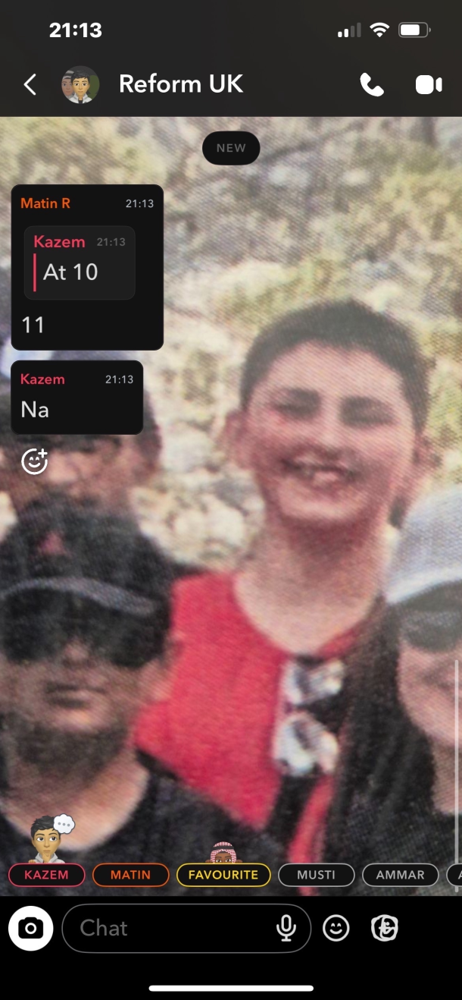

Welcome to the official Jacob roast website.
Jacob plays Valorant like every round is a warm-up. The problem is… he never warms up. His aim is so cold it needs a Sage heal just to register damage.
Watching Jacob peek an angle is like watching a slow-motion car crash. You know exactly what’s about to happen, you can’t stop it, and somehow he still blames lag.
His crosshair placement is so low he’s basically trying to shoot the enemy’s shoes. Bro’s playing Valorant: Podiatrist Edition.
Jacob’s spray control is a war crime. Every time he sprays, the bullets form a constellation. Astronomers are studying his whiffs.
He dies so fast in pistol rounds that Riot should classify him as a destructible environment object.
Jacob’s map awareness is so bad he gets backstabbed by enemies he literally saw five seconds earlier. His minimap might as well be a JPEG.
When Jacob uses his ult, it’s not a power spike — it’s a warning to the enemy team that they’re safe for the next 30 seconds.
His reaction time is slower than the Spike’s beeping animation. By the time he shoots, the round recap screen is already loading.
Jacob’s utility usage is so tragic that even Brimstone’s stim beacon feels more useful. He throws flashes like he’s trying to blind the audience, not the enemy.
Every time Jacob top-frags, the enemy team files a support ticket because something is clearly wrong with the matchmaking system.
